História do Senac Tech
Fundado em 19 de outubro de 1989, o Senac Tech é um centro de tecnologia voltado para o conhecimento.
Com um ambiente e um portfólio de cursos moderno, atende mais de mil alunos por ano por meio de cursos
EAD e
presenciais em diversos níveis, além de ações extensivas.
O principal foco da escola é a educação profissional nas áreas da Informática e Gestão.
Ganhou diversos prêmios, entre eles o Troféu Bronze no Prêmio Qualidade RS - PQRS em 2008, 2009 e 2012,
o
Troféu
Prata em 2015 e 2017, o Prêmio SUCESU, que destacou a fundação do Senac Informática como um dos seis
acontecimentos mais importantes da década, e o reconhecimento pelo Comitê de Comércio e Serviços pela
contribuição ao Sistema da Qualidade em 2008 e 2009.
Em 2016 comemorou, juntamente com todas as unidades do Estado, a conquista do Prêmio Nacional da
Qualidade
(PNQ). No ano seguinte, celebrou o Prêmio Ibero-Americano da Qualidade.
O Senac-RS foi a primeira instituição de ensino do Brasil a receber as distinções, reconhecimentos
máximo à
excelência.
Em março 2018, foi agraciado com o Melhores em Gestão e eleito Destaque na distinção promovida pela
Fundação
Nacional da Qualidade (FNQ).
A escola conta com docentes qualificados na área da tecnologia, com certificação CCNA da Cisco e
Pós-graduação
na área da tecnologia e em docência no ensino profissional.
História do Senac
O Serviço Nacional de Aprendizagem Comercial (Senac) é uma instituição brasileira de educação criada em
10
de
janeiro de 1946 através do decreto-lei 8.621. É uma entidade privada com fins públicos que recebe
contribuição compulsória das empresas do comércio e de atividades assemelhadas. A nível nacional é
administrado
pela Confederação Nacional do Comércio.
Os primeiro cursos ofertados pelo SENAC foram em 1947, foi o curso de Praticante de Comércio e o curso
de
Praticante de Escritório, destinado a jovens entre 14 e 18 anos. Já para maiores de 18 anos, foram
disponibilizados os cursos de Balconista de Tecidos, Calçados e Ferragens, Arquivista e
Caixa-Tesoureiro.